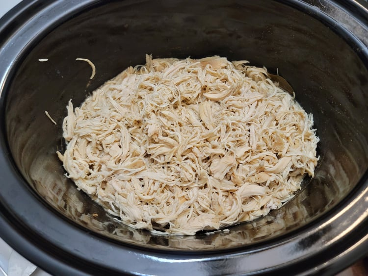

Shredded Chicken Breasts

Ingredients:
- 4 Chicken breasts
- 1 cup Chicken broth
- 1 tsp Salt
- 1 tsp Black pepper
- 1 tsp Onion powder
- 1 tsp Garlic powder
- 2 Bay leaves
Instructions:
- Place the chicken breasts into a slow cooker and pour the chicken broth, bay leaves, and seasonings over it. Let cook for 3-4 hours on high or 6-8 hours on low.
- Remove the chicken from the slow cooker and shred with forks. Use right away or store with the liquid from the slow cooker in a tupperware.